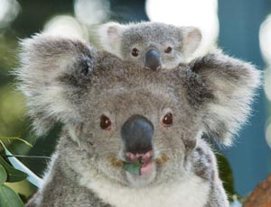

Der Koala ist trotz seines Aussehens kein Bär, sondern auch ein Beuteltier. Es gehört zu den bekanntesten und beliebtesten Tieren Australiens. Das Wort "Koala" stammt von den Aborigines und bedeutet soviel wie "kein Wasser". Koalas trinken wirklich nur sehr wenig Wasser und dösen die meiste Zeit des Tages in den Eukalyptuswäldern des Landes. Die Eukalyptusblätter stellen die bevorzugte Nahrungsquelle dar und sollen eine narkotisierende Wirkung haben. Koalas verlassen die Bäume nur selten und sind durch ihre Krallen gute Kletterer. Die Zahl der bis zu 60 cm großen Tiere ist nur schwer abzuschätzen, soll aber bei rund 400.000 liegen. Ihr allgemeiner Gesundheitszustand gibt Anlass zur Sorge. Rund die Hälfte (in manchen Gebieten bis zu 80%) ist von der Infektionskrankheit Chlamydia befallen. Durch sie können die Tiere erblinden oder zeugungsunfähig werden. In Koalakliniken (z.B. Port Macquarie) versucht man, kranken und angefahrenen Koalas zu helfen. Das "Nationalmaskottchen" Koala leidet außerdem am Rückgang seines natürlichen Lebensraums, den Eukalyptuswäldern. In anderen Gebieten, z.B. auf Kangoroo Island (Südaustralien), treten Überpopulationen der Koalas auf und gefährden durch ihren ungezähmten Blätterhunger (durchschnittlich 1 kg pro Tag) den Bestand der Eukalyptusbäume.
15.11.2011